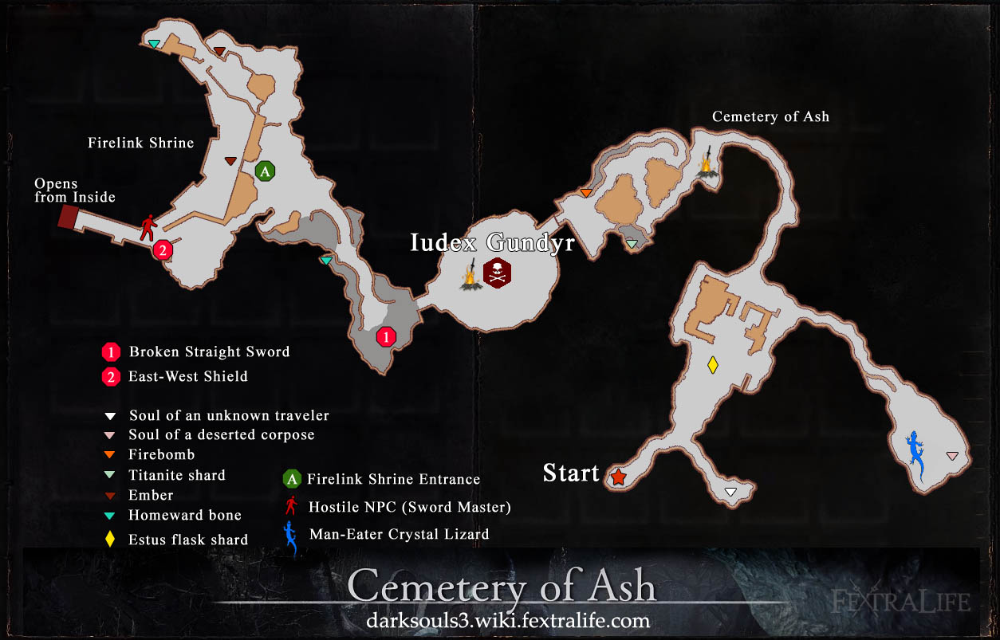

Introduction
Cemetery of Ash is a Location in Dark Souls 3. This location serves as a starting area for new players to the game. This is where players will find themselves at the start of the game, revived as an 'Unkindled', and will have to face the mighty Iudex Gundyr as a test to prove their worth before heading into Firelink Shrine and being able to explore the lands of Lothric.
General info:
- Previous: n/a
- Next: Firelink Shrine
- Recommended Levels: Any
- Bosses: Iudex Gundyr
- Bonfires: Cemetery of Ash, Iudex Gundyr
NPCs in this area
- Sword Master (hostile)
- Irina of Carim (if given Londor Braille Divine Tome or the Deep Braille Divine Tome and purchased at least one Dark Miracle from her)
- Eygon of Carim (hostile) (if given Londor Braille Divine Tome or the Deep Braille Divine Tome and purchased at least one Dark Miracle from her)
Map

Bossfight: Iudex Gundyr
Click Here for more info about this boss.